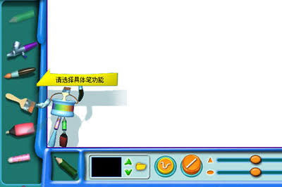
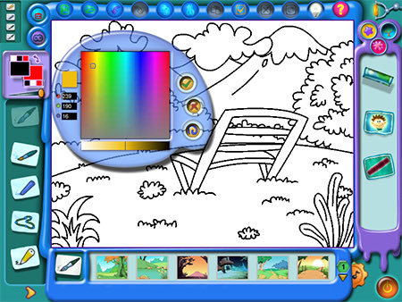
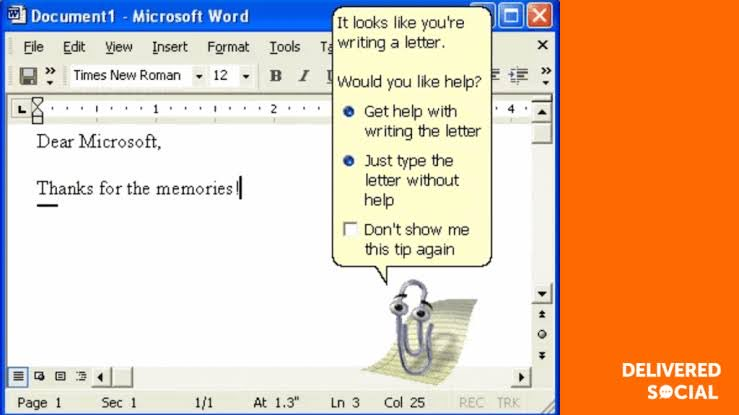

@Cyniton 区别大概在于，上个世代的软件工具是人的附属，需要让使用者感到宜人性
现世代的人是工具软件的附属，所有操作逻辑与美术设计都是为了让人这个「湿件」与设备的I/O通讯速率达到最大…
让人一眼就能看到那些提示信息，设置边界分明的操作区域…
其实只是人的属性被异化了(大悲)

现世代的人是工具软件的附属，所有操作逻辑与美术设计都是为了让人这个「湿件」与设备的I/O通讯速率达到最大…
让人一眼就能看到那些提示信息，设置边界分明的操作区域…
其实只是人的属性被异化了(大悲)



越现代的软件越开始扁平化，专一化，通用化，来契合这个高效，原子化的时代。
拟物化和“有个性”“有灵魂”的设计理念在千禧年时出现，因为在那个信息低速的时候，设计者觉得人们真的会长期使用一个固定的软件，并和自己所使用的软件构建稳固的联系。
现在它们已经成了“上个时代”。 https://t.co/J50ldCmXU2 https://t.co/XaA6qVjIbM
拟物化和“有个性”“有灵魂”的设计理念在千禧年时出现，因为在那个信息低速的时候，设计者觉得人们真的会长期使用一个固定的软件，并和自己所使用的软件构建稳固的联系。
现在它们已经成了“上个时代”。 https://t.co/J50ldCmXU2 https://t.co/XaA6qVjIbM